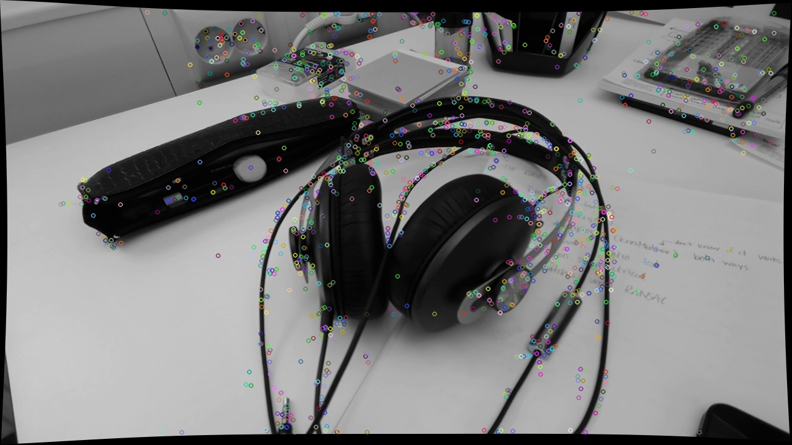
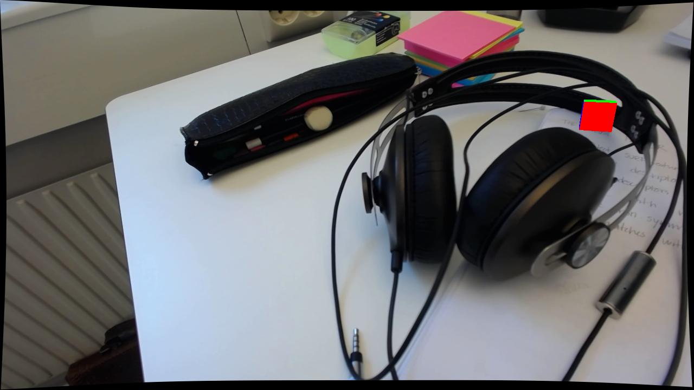

MARKERLESS AUGMENTED REALITY FOR VISUALIZATION OF 3D OBJECTS IN THE REAL WORLD
OUTLINE
- A Little Introduction
- Augmented Reality
- Experimental Studies
- Results and Conclusion
A LITTLE INTRODUCTION
What have I done and why have I done it?
Aim and Purpose
What: Examine the possibilities of the off-the-shelf library OpenCV when developing markerless augmented reality applications.
How: By implementing the structure from motion algorithm with algorithms provided by OpenCV
AUGMENTED REALITY
What is Augmented Reality?
Definition of AR
- It combines real and virtual objects
- You can interact with the application in real time
- It is registered in 3D
Tracking in AR
Tracking provides information about the users viewpoint or the camera position and orientation in 6 DoF. There are different tracking approaches:
- Sensor-based tracking
- Vision-based tracking
- Hybrid techniques
Markerbased AR
Pros:
- Robust, good alignment
- Fast
Cons:
- Preparing environment
- Occlusion of marker
Markerless AR
Pros:
- No preparation
Cons:
- Expensive calculations
- Not as robust
Structure from Motion and AR
Simultaneously calculating the camera motion and structure of the scene using computer vision algorithms
EXPERIMENTAL STUDIES
What experimental studies have I done?
OpenCV
- Open Source computer vision library
- Supports several platforms
Camera Calibration
Gives the intrinsic parameters and the distortion coefficients.
The Structure from Motion Algorithm
- Feature detection
- Feature matching and outlier removal
- Pose Estimation
- Triangulation
- Handling multiple views
RESULTS
How has things turned out?
Feature detection
Feature matching
Matches from view one to view two
Feature matching
Matches from view two to view one
Outlier removal
Ratio test from view one to view two
Outlier removal
Ratio test from view two to view one
Outlier removal
Matches after symmetry test
Outlier removal
Matches after epipolar constraint test
Two view pose estimation

Adding multiple views
Integrating virtual object
Integrating virtual object
Integrating virtual object
Integrating virtual object
Integrating virtual object
Outside views
Outside views
Algorithm performance
A small benchmark test has been performed to see how the different algorithms provided by OpenCV perform. The main thing noticed in this test is that the feature description is slow.
CONCLUSION
What are the conclusions of this, is OpenCV mature to use for markerless augmented reality applications and SfM?
- Not in real time, computunally heavy
- How could things be speeded up?
- What if enough features are not found?
- What about mobile devices?